Overview
Egy cég brandingjében kiemelt szerepet játszik a logó megtervezése. A ShopRenter esetében ez kiemelten fontos volt, hiszen egy olyan webárhuázmotorról van szó ami több mint 3200 ügyfelet szolgál ki.
Empathize
A logótervezés első lépése az adott cég megismerése. Minél több információt sikerül begyűjtenem a kutatás során annál egyszerűbb a dolgunk a logó megalkotásánál és ezzel együtt az arculati anyagok kialakításánál.
- Mivel foglalkozik a cég? Milyen szolgáltatást vagy terméket értékesít?
- Mi a víziója, céges értékei, céljai?
- Kik az ügyfelei, dolgozói?
- Mi különbözteti meg a konkurenciáitól?
- Milyen színek jellemzik legjobban a céget?
Ha érdekel a logó tervezés, töltsd ki ezt az előszükségletet és küld el nekem emailben!
Cím
A ShopRenterrel folytatott megbeszélések során kiderült, hogy több okból is szükséges a logó redesign. Egyrészt az egész adminfelület újra lesz gondolva, másrészt kristályosodni látszott egy új irány a cég életében, miszerint nem csak webáruház motort szeretnének adni az ügyfeleiknek, hanem egy komplett ökoszisztémát.
Fő irányvonal az egyszerűsödés: A legtöbb cég életében a brand megerősödésével arányosan a logók folyamatosan egyszerűsödnek és letisztultabbá válnak.
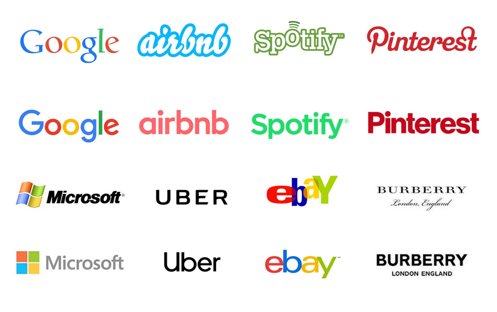ShopRenter pozícionlása az új logó tervekhez
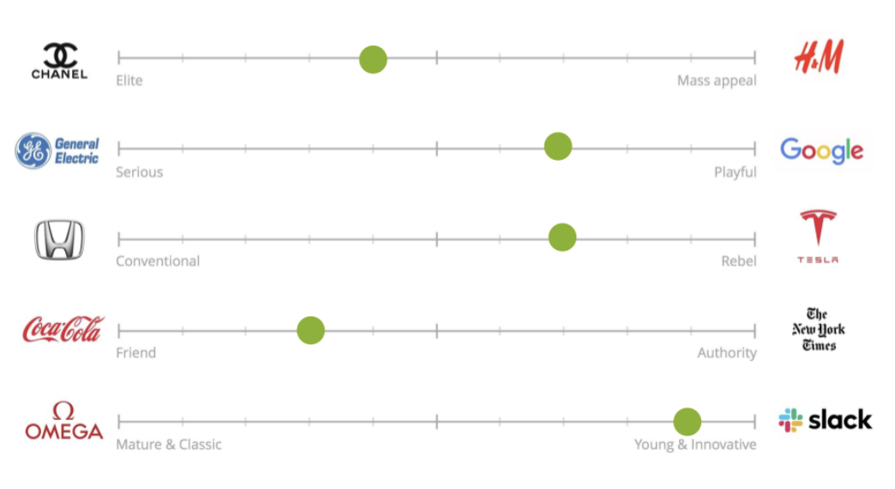Colors
Színek terén az egyik kritérium az volt, hogy tartsuk meg az eredeti logó zöld színét, de egészüljönk ki egy karakteres szürkével vagy feketével.
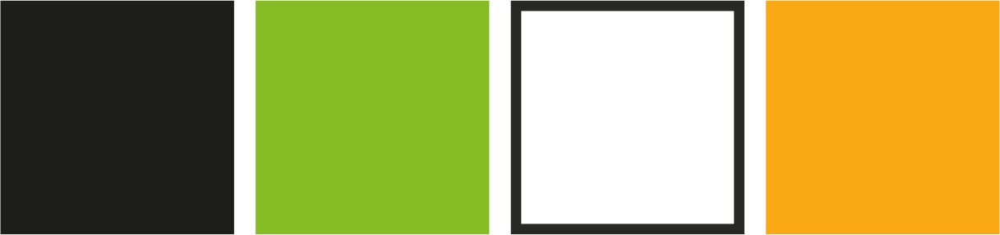Typography
Az új logóhoz egy vastabb sans serif fontot szerettem volna választani, aminek az Avenir meg is felelt. Egy második alternatív megoldásnak Recoleta serif fontot választottam. Ez egy kissé szokatlan, a ShopRentertől távol állóbb betűtípus. Modern és fiatalos hatást kölcsönöz a logónak.
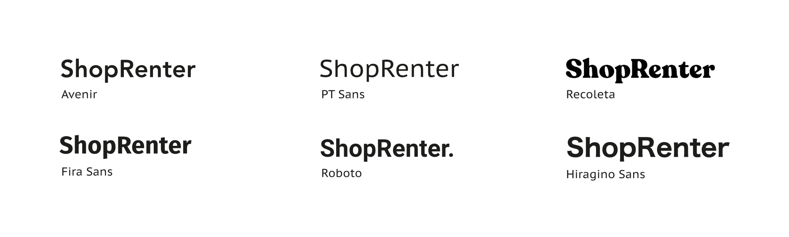Conception 1
Shopping
Első koncepciónak egy általánosabb témát választottam: a vásárlás. Itt a szokásos bevásárló kosár és táska vonalon kezdtem el gondolkozni.

Kulcsszavak és tervek:

Mockups
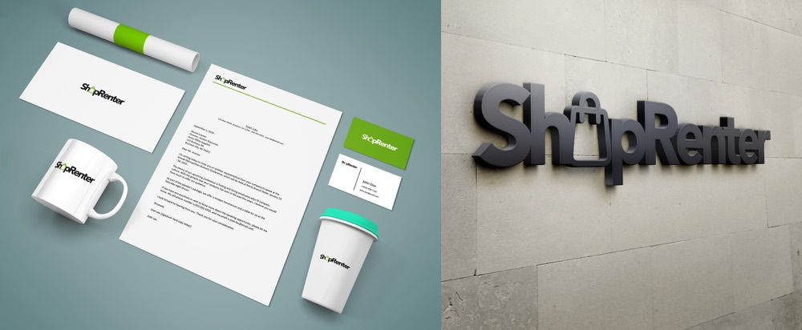Conception 2
Shopping
Második koncepció az egyszerűsödés volt. Az adott színek felhasználásval a lehető legletisztultabb logókat terveztem ebbe a csoportba. Az egyszerű talpatlan tipográfiát csak a "p" és az "R" betűk játéka gazdagítja. Illetve a második verzióban egy mosolygó arc, ami a ShopRenter ügyfélközpontúsága mellett az új hangvételét is hivatott szimbolizálni.
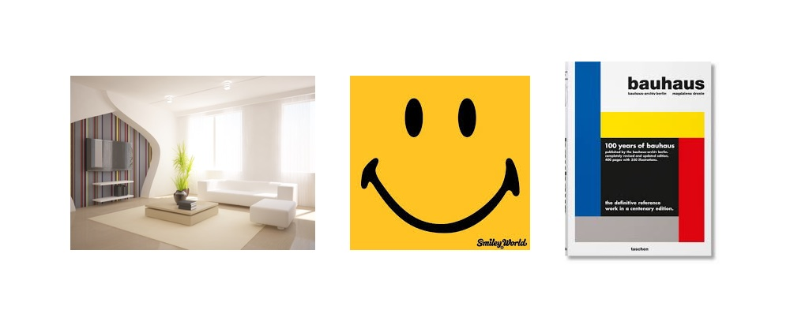Kulcsszavak és tervek:
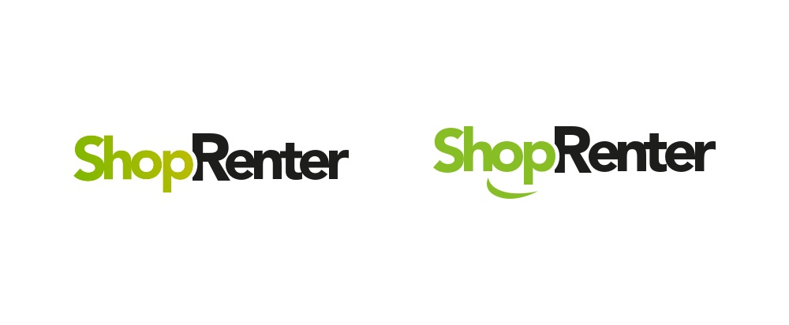Mockups
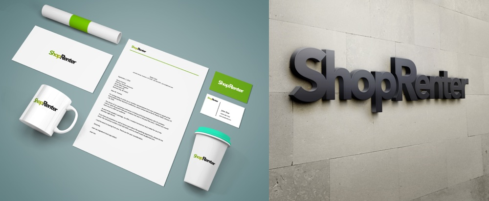Conception 3
ShopRenter Ecosystem
A harmadik koncepció az ökoszisztéma kialakításához fűződött. Egy olyan egyszerűen megjegyezthető ikont szerettem volna létrehozni, amit könnyedén fel tudnak használni a további szolgáltatások marketingjénél.
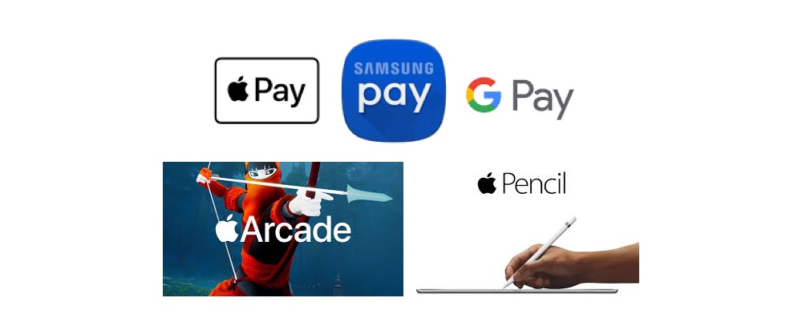Kulcsszavak és tervek:
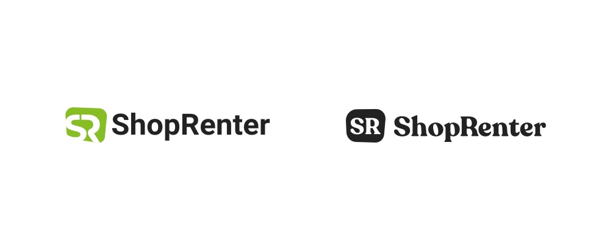Mockups
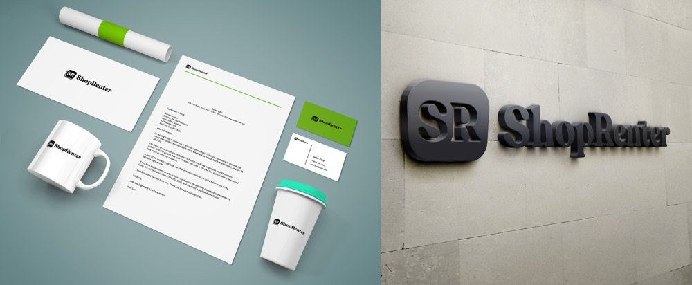További felhasználási módok
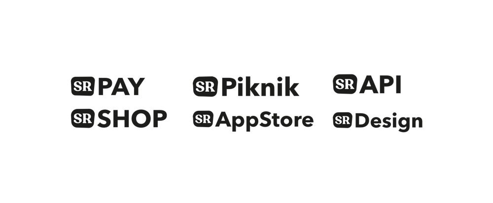Presentation
A tervekhez tartozó prezentáció